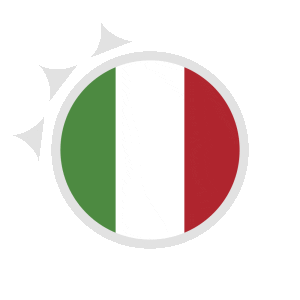
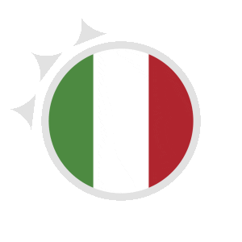
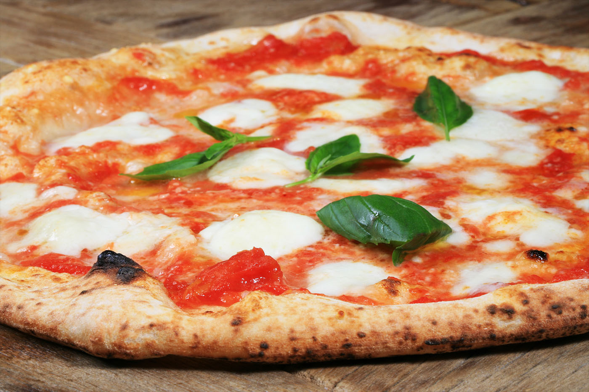
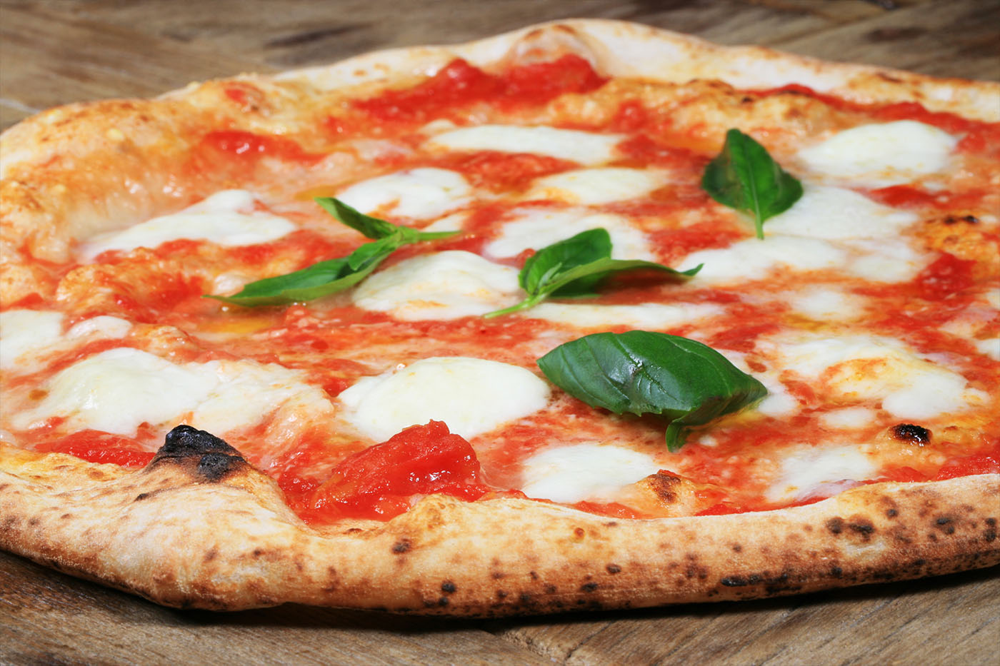
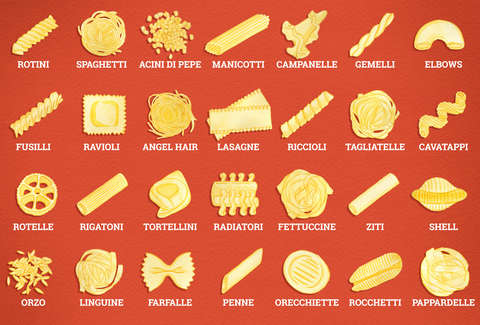

The country of Italy is a peninsula, located in Meditteranean Europe. It shares its northern border with France, Switzerland, Austria and Slovenia. Italian is the principal language of Italy, but there are minorities speaking German and French. The capital and largest city of Italy is Rome, known as Roma in Italian.

Rome is the third most visited city in Europe and the fourteenth worldwide. The city attracts visitors from all around the world, who are eager to explore the beautiful monuments and archeological sites Rome has to offer.
My page on Rome has more information about the city and its main tourist attractions.

Venice is a city in Italy’s northeast region, built on a group of islands connected by bridges. This city is a tourist destination most well - known for its canals and gondolas used as a method of transportation in the city.
Get to know more about Venice by visiting my other page.

Known as the birthplace of the Renaissance, Florence’s museums, palaces and churches are home to some of the greatest artistic treasures in the world.
Get to know about the attractions in Florence by visiting my other webpage.

Pisa is most famous for its Leaning Tower, an architectural project that went terribly wrong and is now a world - famous tourist site.
Know more about the Leaning Tower of Pisa by visiting my other page.

The Amalfi Coast is one of Italy’s most memorable and breathtaking destinations, and about 5 million people visit this UNESCO World Heritage site every year.
Get to know more about the beauty of the Amalfi Coast by visiting my other page on it.
 

Pizza is a dish of Italian origin, that consists of a flattened piece of bread dough topped with a combination of olive oil, cheeses and vegetable toppings (eg. olives). It is then baked quickly in a wood - fired oven and served hot. The most traditional and simple Italian pizza is the Margherita, which is topped with tomatoes or tomatoes sauce, mozzarella cheese and basil. Pizza was known worldwide when Italians immigrated to New York City in the United States around the early 1900s. After World War 2, the pizza industry boomed in the United States and soon, pizzas became known all over the world. Pepperoni, mushrooms and peppers are among the traditional toppings familiar to many Americans. Other famous Italian pizzas include the Neapolitan pizza and the Four Cheese pizza.


Pasta is a staple food of Italian cuisine, typically made from dough of durum wheat flour mixed with water or eggs, which is then formed into various shapes, then cooked by boiling or baking. Pasta comes in a number of shapes and varieties, with 310 specific forms known by over 1300 documented names.


Tiramisu is an elegant and rich coffee - flavoured Italian desert, with its main ingredients being ladyfinger cookies, coffee, mascarpone cheese and cocoa powder. The ladyfingers are soaked in coffee (most common used coffee in tiramisu is espresso) and then placed at the bottom of the container. Next, a layer of mascarpone cheese and a layer of zabaglione (Italian custard made from egg yolks and sugar) are added. You continue layering those ingredients until you reach the top of the container and then finish with a dusting of cocoa powder. Place the container in the fridge to cool and serve it when the custard is set and not too liquidy.
Italy has a long history, as Rome was founded in 753 BC by two twins. After the Roman Empire broke down in 395 AD, there were many separate kingdoms and city states. Italy became one nation only in 1861 and since then, the country also includes the islands of Sicily and Sardegna. The Italian Republic was formed in 1946 and Italy is a member of the European Union (EU) and the NATO.
Return to the top of the page.
Visit this page to see the bibliography for all my webpages.
© Aparna Kagini 2019